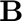

JAM Tutorial: 2D Laminar Flow Around a Cylinder
Contents
- Initial Setup
- Problem Configuration
- Derivative Definitions
- Compute symbolic functions
- Numerical Simulation: Domain Discretization
- Equation Pointers and Projection Matrices
- Variable Initialization
- Physical Grid Generation
- Full Variable Expansion
- Simulation Parameters and Initial Guess
- Time Integration Setup
- Main Simulation Loop (Newton-Raphson)
- Numerical resolution with the Newton-Raphson method
- Visualization
Initial Setup
Clears the workspace, restores default MATLAB paths, and sets up a subfolder 'equation/' for storing auxiliary functions. This ensures a clean environment and organizes generated function files.
clear all; % Clear workspace restoredefaultpath; % Restore default MATLAB paths pathequation = ['equation/'];%Symbolic equations if ~isfolder(pathequation) mkdir(pathequation); end addpath([pwd '/' pathequation]); % Path for Jacobian functions
Problem Configuration
This section defines the physical parameters and computational domain for the 2D laminar flow around a cylinder problem.
A sketch of the physical problem is shown below:
The problem is formulated in dimensionless form using the incident velocity, cylinder radius, and fluid density. The primary independent physical parameter is the Reynolds number (). Other parameters define the computational domain geometry.
% List of physical and domain parameters list_param = {'Re', 'Rout', 'L1', 'L2', 'Y1', 'X1', 'Y2', 'X2'}; Np = length(list_param);
The computational domain will be divided in two regions. In this particular example, in both region are each are defined the same unknowns, the velocity components in cartesian, and ; the pressure and and which relates the physical domain, (x,y,z), with the mapped one .
is the corresponding time-variable in the mapped space. Note that in this present case  does not appears because of the 2D character of the problem. We keep track also of the total number of the variables in the regions.
does not appears because of the 2D character of the problem. We keep track also of the total number of the variables in the regions.
NRegion = 2; % Number of domain blocks (lower and upper) list_var{1} = {'vy', 'vx', 'p', 'F', 'G'}; % Variables in block 1 (lower: y<0) list_var{2} = {'vy', 'vx', 'p', 'F', 'G'}; % Variables in block 2 (upper: y>0) list_varA = cat(2, list_var{:}); % All variables combined NVAR = cellfun(@length, list_var); % Number of variables per block NVA = length(list_varA); % Total number of variables % In addition to the regions, 8 specific locations (boundaries/interfaces) % are identified where the governing equations or boundary conditions % may differ. Nequations = 8; % Number of equation types in the domain
Derivative Definitions
Defines the types and orders of derivatives used in the equations. Derivatives are performed in the mapped computational space (). '' : No derivative. Single character (e.g., 'r0'): First-order derivative with respect to that variable (e.g., ). The '0' indicates the mapped space. Repeated characters (e.g., 'rr0'): Higher-order derivative (e.g., ). Multiple characters (e.g., 'rz0'): Mixed derivative (e.g., ).
list_der0 = {'', 'r0', 'z0', 'rr0', 'zz0', 'rz0','t0'}; % Derivative types
NDA = length(list_der0); % Number of derivatives
% Generate symbolic representations for the derivatives (used internally
% by symbolic processing scripts).
list_dersymbolic{1} = '';
for i=2:NDA
name=list_der0{i};
out=[];
for k=1:length(name)-1
out = [out ',' name(k) '0'];
end
out = [out ')'];
list_dersymbolic{i} = out;
end
Compute symbolic functions
This step derives the MATLAB functions for the problem's equations and their Jacobians using symbolic computation. This needs to be done only once unless the equations change. The flag `leq` controls whether this step is executed (1 to compile, 0 to skip). Symbolic parameters are created and then the blockA.m script performs the symbolic derivation.
leq=1; %compiling if (leq==1) for i=1:Np pa(i,1)=sym(['pa_',num2str(i)],'real'); eval(sprintf('%s = pa(%d);',list_param{i},i)) end blockA; %Symbolic calculation disp('Symbolic calcultations done!') end
Numerical Simulation: Domain Discretization
Sets the number of nodes in the radial and axial directions for each region.
nr = [17, 17]; % Radial nodes per region nz = [801, 801]; % Axial points per block (must be multiple of 4 + 1)
the numerical differentiation of a certain variable, v1, in the entire numerical domain is performed through the derivatives collocation matrices genenerated within collocationmatrices2th.m It also returns the indices (`Ia`, `Ib`, `Ja`, `Jb`) corresponding to the nodes within each region in the global discretized domain.
[r0A, z0A, nrA, nzA, ddr0A, ddrr0A, ddz0A, ddzz0A, Ia, Ib, Ja, Jb] = ... collocationmatrices2th(nr, nz, NRegion); % Generate collocation matrices ntA = nrA * nzA; % Total grid points in full domain nt = nr .* nz; % Grid points per block
Equation Pointers and Projection Matrices
The pointers.m script sets up indices and projection matrices required to map variables and equations between the regional and global domain representations and to apply boundary conditions.
pointers;
Variable Initialization
Initializes the solution variables () for each region with zero values. These will be populated with an initial guess or previous solution.
idx = 1; for k = 1:NRegion for v = 1:NVAR(k) eval(sprintf('%s%d = zeros(nr(%d), nz(%d));', list_varA{idx}, k, k, k)); idx = idx + 1; end end
Physical Grid Generation
Generates the physical coordinates (x, y) for the computational grid based on the defined domain parameters and mapping functions.
rA = repmat(r0A', 1, nzA); % Radial coordinates zA = repmat(z0A, nrA, 1); % Axial coordinates rrA{1} = repmat((r0A(1:nr(1))/r0A(1))', 1, nzA); % Normalized radial coords (block 1) rrA{2} = repmat((r0A(nr(1):nrA)/r0A(nrA))', 1, nzA); % Normalized radial coords (block 2) % Domain boundaries Rout = 6; % Outer wall y-coordinate L1 = 6; % Inlet x-coordinate L2 = 16; % Outlet x-coordinate % Mapping functions for grid [~, j01] = min(abs(z0A - 0.25)); % Left stagnation point index [~, j02] = min(abs(z0A - 0.5)); % Right stagnation point index x1 = z0A(1:j01) / z0A(j01); x2 = (z0A(j01:j02) - z0A(j01)) / (z0A(j02) - z0A(j01)); x3 = (z0A(j02:nzA) - z0A(j02)) / (z0A(nzA) - z0A(j02)); g0{1} = [-L1 + x1*(L1-1), -cos(pi*x2(2:end-1)), 1 + x3*(L2-1)]; % Block 1 x-mapping f0{1} = [zeros(1, length(x1)), -sin(pi*x2(2:end-1)), zeros(1, length(x3))]; % Block 1 y-mapping g1{1} = g0{1}; % Block 1 outer x-boundary f1{1} = -Rout * ones(1, nzA); % Block 1 outer y-boundary g0{2} = g0{1}; % Block 2 x-mapping f0{2} = [zeros(1, length(x1)), sin(pi*x2(2:end-1)), zeros(1, length(x3))]; % Block 2 y-mapping g1{2} = g0{1}; % Block 2 outer x-boundary f1{2} = Rout * ones(1, nzA); % Block 2 outer y-boundary % Generate initial mesh for k = 1:NRegion z1 = zA(Ia(k):Ib(k), Ja(k):Jb(k)); r1 = rrA{k}; g00 = repmat(g0{k}, nr(k), 1); g11 = repmat(g1{k}, nr(k), 1); f00 = repmat(f0{k}, nr(k), 1); f11 = repmat(f1{k}, nr(k), 1); eval(sprintf('F%d = f00 + (f11 - f00) .* r1;', k)); % y-coordinates eval(sprintf('G%d = g00 + (g11 - g00) .* r1;', k)); % x-coordinates end % Combine borders for full domain Y1 = [F1; zeros(nr(2)-1, nzA)]; % Block 1 y-border X1 = [G1; zeros(nr(2)-1, nzA)]; % Block 1 x-border Y2 = [zeros(nr(1)-1, nzA); F2]; % Block 2 y-border X2 = [zeros(nr(1)-1, nzA); G2]; % Block 2 x-border ndA = reshape(ndA, 1, ntA); % Flatten equation indices Y1 = reshape(Y1, ntA, 1); % Flatten y-coordinates Y2 = reshape(Y2, ntA, 1); X1 = reshape(X1, ntA, 1); % Flatten x-coordinates X2 = reshape(X2, ntA, 1);
Full Variable Expansion
Expands the initial/updated solution variables from their block-wise representation to the full global domain representation. This uses projection matrices (PNMv) generated in the `pointers.m` script.
lv = 0; for k = 1:NRegion for i = 1:NVAR(k) lv = lv + 1; variable_name = list_var{k}{i}; eval(sprintf('%s%dfull = reshape(PNMv{%d} * reshape(%s%d, ntv(%d), 1), nrA, nzA);', ... variable_name, k, lv, variable_name, k, lv)); end end
Simulation Parameters and Initial Guess
Sets the Reynolds number and the parameter vector. Calls a script (`redeabletoxooptima.m`) to prepare an initial guess for the solution vector (`x0` and `x0full`). Stores previous time step solutions for potential time integration schemes (although set up for a steady-state case here).
Re = 10; % Reynolds number pa = [Re; Rout; L1; L2; 0; 0; 0; 0]; % Parameter vector redeabletoxooptima; % Initial guess for x0 and x0full x0mfull = x0full; % Previous time step solution x0mmfull = x0mfull; % Previous-previous time step solution
Time Integration Setup
Sets up parameters for a generic second-order backward time integration scheme. However, for a steady-state problem, the time step (`dt`) is set to a very large value, effectively solving for the steady solution without actual time marching.
In case of equal timestep it reduces to,
In this case since we search a steady case (It is not a time evolution problem) we set to infinity.
dt=1.e28; dt1=dt;
ll is the time step and Ntimesteps is the number of timesteps. In the present case = 1 because stationary
Ntimesteps=1; if(Ntimesteps>1) tiempo(1) =0; end % The `tiempo` array would store the time instants for each step if Ntimesteps > 1.
Main Simulation Loop (Newton-Raphson)
This loop performs the simulation. For this steady-state case, it runs only once (Ntimesteps=1). Inside the loop, the nonlinear system of equations is solved using the Newton-Raphson iterative method.
for ll=1:Ntimesteps
if (ll>1) tiempo(ll)=tiempo(ll-1)+dt; end
Numerical resolution with the Newton-Raphson method
The Newton-Raphson method searchs to solve a nonlinear system of equations of the form,
The Newton-Raphson results from a Taylor analysis around ,
Demanding convergence,
The Newton-Raphson iterative method results,
or, in matrix form,
where is the Jacobian tensor.
Initiallizing the error error and the number of iterations iter
error=1e9;
iter=0;
nitermax = 150;
errormax = 1e-3;
relaxation = 0.5;
while (error > errormax && iter < nitermax)
iter=iter+1;
Construct and  with matrixAB.m
matrixAB;
Solve the linear system of equation to compute the correction .
dxa=a\b;
error=max(abs(dxa))
if(error > 10^8) error('Divergence detected'); end
Apply the correction
x0=x0+relaxation*dxa;
xotoredeableoptima; % Update variable
end
end
Visualization
velocity(G1, G2, F1, F2, vx1, vx2); % Plot x-velocity